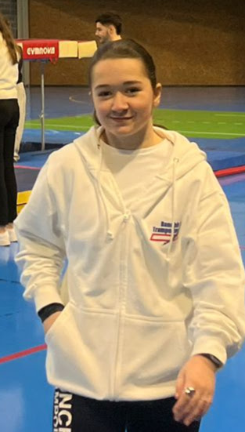

Eloane Tourangin
Stage de seconde

Profil
Actuellement en seconde au Lycée La Salle Lille, je suis dynamique et possède un excellent sens du contact.
Volontaire et engagée, j'aime collaborer avec des interlocuteurs variés et je me distingue par mon goût d'apprendre
au service du collectif.
Contact
Formation
- Lycée La Salle Lille : Classe de seconde Générale. Objectif : examen Cambridge niveau B1/B2 et membre du Bureau des Lycéens.
site de l'établissement
- Collège Saint Adrien : Obtention du Brevet avec mention, Diplôme de secourisme et Certification Pix.
Expériences professionnelles
- Stage au cabinet d’avocat de Maître Métairie (Février 2026).
- Stage au CNRS de Lille (2025).
Langues et Compétences
- Anglais : Niveau B1 (Validation Cambridge en 3ème).
- Espagnol : Niveau A2.
Loisirs et Sports
Je pratique le trampoline depuis 4 ans. Je suis double championne de France UFOLEP (2024, 2025) et membre de
l’équipe communication du trampoline club de Ronchin.
- Voyages : Angleterre, Espagne, Italie, États-Unis.
- Activités : Lecture, Musique, Chorale.